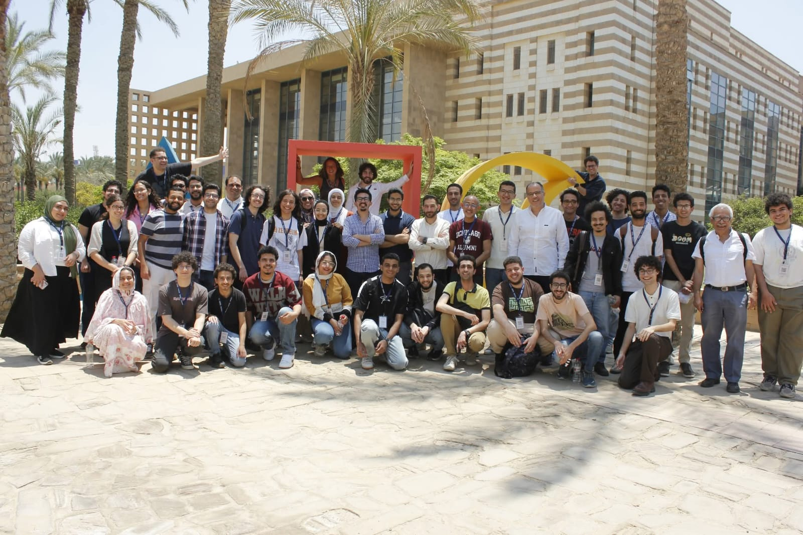

A three-day school on model theory, Fraïssé theory, ω-categorical groups,
and structural Ramsey theory.
Conference Center, P006 and P007, AUC New Cairo
·
24–26 May 2026

Participants and organizers · Cairo Logic Summer School 2026
About
The Cairo Logic Summer School 2026 brings together students and researchers
in mathematical logic for three days of lectures and discussions at the
American University in Cairo, from 24 to 26 May 2026.
The school is open to advanced undergraduates, graduate students, and early-career
researchers. It begins with introductory mini-courses on model theory and
Fraïssé theory, then moves on to current research themes: ω-categorical groups
and structural Ramsey theory. No prior background in model theory is assumed —
a basic familiarity with first-order logic and abstract algebra is sufficient.
The American University in Cairo · New Campus
Beyond pure logic, the themes of the school have surprisingly deep ties to
theoretical computer science and data science. The central insight of
Ramsey theory — that sufficiently large systems must contain ordered substructure —
underpins classical lower bounds in communication complexity, the construction
of pseudorandom objects, and tools from extremal combinatorics used in
coding theory and cryptography. Closely related regularity phenomena
drive algorithms for network analysis, clustering, and community
detection on large graphs. Model-theoretic notions of stability and dimension, in
turn, connect directly to statistical learning theory, most famously through
the equivalence of NIP and finite VC dimension.
Schedule
The school runs from Sunday, 24 May through Tuesday, 26 May. The complete timetable is below.
Day 1
Sunday24 May
09:00 – 09:30Registration
09:30 – 10:00Breakfast Snack
10:00 – 11:00Model Theory I
11:00 – 11:15Break
11:15 – 12:15Model Theory II
12:15 – 12:30Break
12:30 – 13:00Exercise Session
13:00 – 14:00Lunch
14:00 – 15:00Fraïssé Theory I
15:00 – 15:15Break
15:15 – 16:15Fraïssé Theory II
16:15 – 16:30Break
16:30 – 17:00Exercise Session
Day 2
Monday25 May
09:30 – 10:00Breakfast Snack
10:00 – 11:00ω-categorical Groups I
11:00 – 11:15Break
11:15 – 12:15ω-categorical Groups II
12:15 – 12:30Break
12:30 – 13:00Exercise Session
13:00 – 14:00Lunch + Conference Picture
14:00 – 15:00Ramsey Theory I
15:00 – 15:15Break
15:15 – 16:15Ramsey Theory II
16:15 – 16:30Break
16:30 – 17:00Exercise Session
Day 3
Tuesday26 May
09:30 – 10:00Breakfast Snack
10:00 – 11:00ω-categorical Groups III
11:00 – 11:15Break
11:15 – 12:15ω-categorical Groups IV
12:15 – 12:30Break
12:30 – 13:00Exercise Session
13:00 – 14:00Lunch
14:00 – 15:00Ramsey Theory III
15:00 – 15:15Break
15:15 – 16:15Ramsey Theory IV
16:15 – 16:30Break
16:30 – 17:00Panel Session / Closing
Rooms
Sunday morning lectures (until 12:30) take place in Lecture Hall P007;
all subsequent sessions are held in Lecture Hall P006. Both rooms are
inside the Conference and Visitor Center.
Lunch
Served in the University Gardens in front of the Library.
Getting to campus
Enter the campus through Gate 4 and continue to the
Pepsi Gate.
See the campus map
for orientation — the Conference and Visitor Center is building no. 20.
The Cairo Logic Summer School is supported by the U.S. National Science Foundation
under Nicholas Ramsey's CAREER Award DMS-2442011, and by the
American University in Cairo through
Afretec,
the African Engineering and Technology Network.